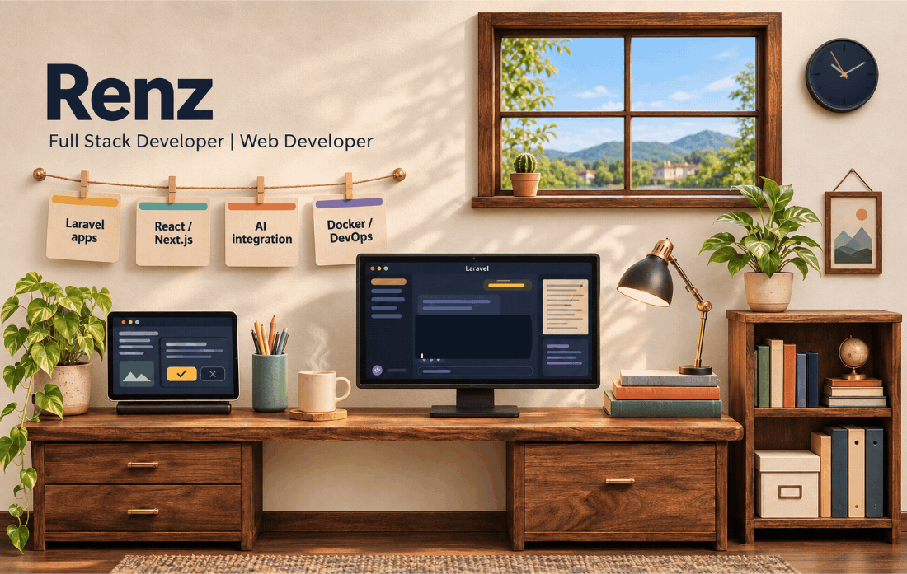
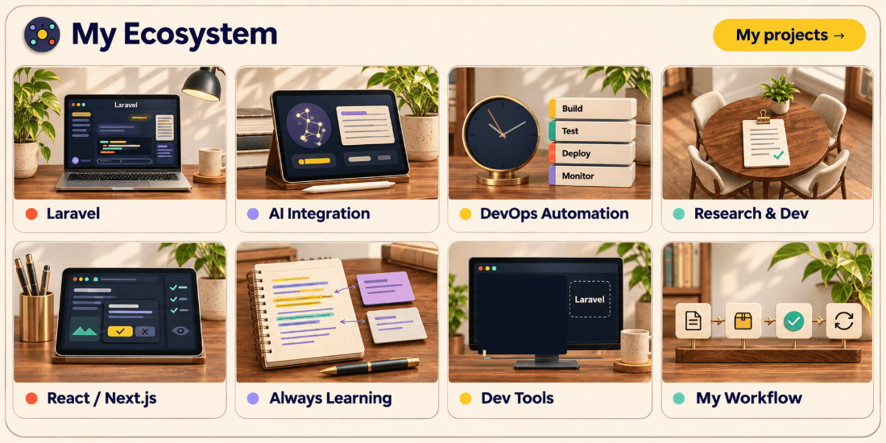

Portfolio · renzcarljansen@gmail.com · LinkedIn
Renz Carljansen Sarucam
Research & Development Engineer · Full Stack Web Developer · DevOps Engineer · UI/UX Designer
More about me, my stack, and my projects
About me
I build enterprise web applications with Laravel, React, and Next.js. My current focus includes AI integration, Docker, DevOps, and Cloudflare Tunnel. I'm open to open source collaboration, enterprise web projects, and UI/UX projects.
Tech stack
| Area | Technologies |
|---|---|
| Languages | HTML, CSS, JavaScript, TypeScript, PHP, Python, Java, C, C++ |
| Frontend | React, Next.js, Vue, Vite, Tailwind CSS, Bootstrap |
| Backend | Laravel, Node.js, Django, Firebase |
| Databases | MySQL, PostgreSQL, MongoDB |
| DevOps & Cloud | Docker, Linux, Bash, Git, GitHub Actions, Cloudflare |
| Design | Figma, Photoshop |
Featured projects
| Project | Description | Technologies |
|---|---|---|
| ReOrderPro | Procurement Management System | Laravel, MySQL |
| E-JO | Enterprise Job Order Management | Laravel |
| Portfolio Website | Personal Portfolio | Next.js |
| AI Assistant | AI-powered Assistant | OpenAI API |
Currently learning
React Native, Kubernetes, Artificial Intelligence, Cloud Computing, CI/CD Pipelines, and DevOps Automation.
Technology is not just about writing code. It's about solving real-world problems through innovation.